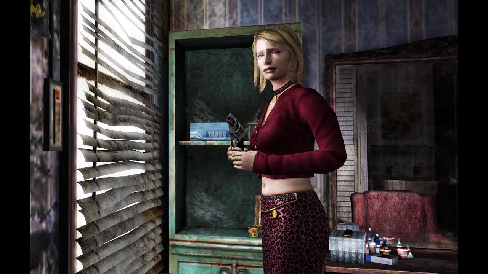
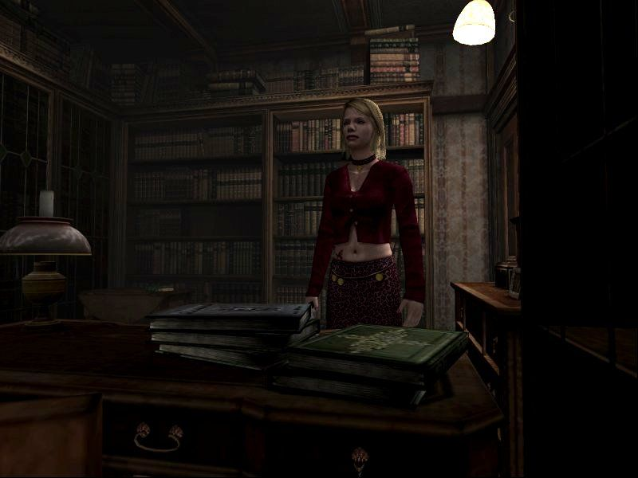
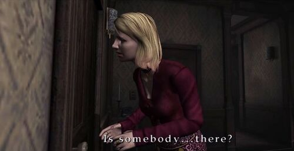

XBOX Version
"SILENT HILL 2 Saigo no Uta"
New horrifying episodes
In the sub-scenario added for the XBOX version, players can play as Maria. Weapons for her exclusive use are provided.
Furthermore, explore a newly added western style building. What is the story about Maria? Search there and find out. How are Maria and James connected? There was only a hint of their connection in the main scenario. Is her secret finally going to be disclosed?
Dramatically improved graphics, illustrates in every nook and cranny of the world of SILENT HILL. Turn the filter effect off, and see the difference.
Moreover, there are more hidden secrets in the main scenario... NOW ON SALE!! Click here for the PlayStation2 version of SILENT HILL2 Click here for the SILENT HILL series